방송통신산업기사 (2010-02-21 기출문제)
1과목: 디지털 전자회로
1. 베이스 공통 증폭회로의 특징으로 틀린 것은?
- 입력저항이 작다
- 출력저항이 크다.
- 전류이득은 0.96~0.98 정도이다.
- 출력전압과 입력전압은 역 위상이다.
(정답률: 알수없음)

2. 그림은 부궤환 연결방식 중 어떤 방식인가?
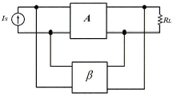
- voltage-series
- current-series
- current-shunt
- voltage-shunt
(정답률: 79%)
3. 초대 표현 숫자가 256 종류인 경우 이를 표현하기 위하여 몇 비트의 디지트가 필요하게 되는가?
- 5비트
- 6비트
- 7비트
- 8비트
(정답률: 80%)
4. 발진기에서 이용되는 궤환회로로 옳은 것은?
- 정궤환회로
- 부궤환회로
- 정궤환과 부궤환 모두 사용한다.
- 궤환회로를 사용하지 않는다.
(정답률: 91%)
5. 다음의 회로 중에서 입력 전압의 기준 레벨 이상이 되면 일정하게 차단시키는 회로는 다음 중 어느 것인가?
- 클리퍼 회로
- 클램퍼 회로
- 리미터 회로
- 슬라이서
(정답률: 80%)
6. 소신호 증폭이나 트랜지스터의 활성영역에서만 동작하게 만든 증폭기는?
- A급 증폭기
- AB급 증폭기
- B급 증폭기
- C급 증폭기
(정답률: 70%)
7. 다음 회로의 설명으로 틀린 것은?
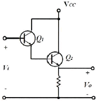
- 트랜지스터 Q1과 Q2는 Darlington 접속이다.
- 전류증폭률은 (1+hfe1)(1+hfe2)이다.
- 입력저항은 대단히 높고 출력저항은 낮다.
- 전압이득이 1보다 크다.
(정답률: 75%)
8. 다음의 설명 중 레지스터(Register)의 기능으로 옳은 것은 다음 중 어느 것인가?
- 펄스 신호의 발생
- 데이터의 일시 저장
- 카운터 대용
- 클록 회로의 동기
(정답률: 100%)
9. J-K 플립플롭에서 J, K의 입력과 과거 출력 Q(t)를 이용하여 현재 출력 Q(t+1)을 결정하는 식으로서 옳은 것은 다음 중 어느 것인가?
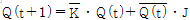
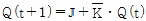
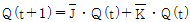
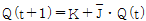
(정답률: 67%)
10. 다음 중 그레이 부호(Gray Code)를 바르게 설명한 것은 다음 중 어느 것인가?
- 연산하는데 용이
- 인접 부호와 2비트가 동일
- 인접 부호와 1비트가 상이
- 가중치 부호
(정답률: 67%)
11. 다음 회로의 명칭으로 옳은 것은 어느 것인가?
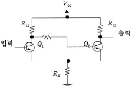
- 차동 증폭기
- 슈미트 트리거 회로
- 부스트랩 회로
- 클램핑 회로
(정답률: 알수없음)
12. 다음 회로에서 입력신호에 대한 출력 신호는?
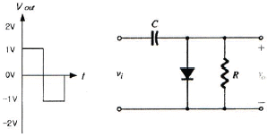
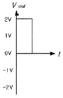
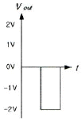
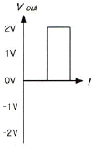
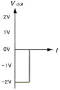
(정답률: 70%)
13. 다음 중 교류 신호를 구성하는 기본적인 요소가 아닌 것은 다음 중 어느 것인가?
- 진폭
- 주파수
- 증폭도
- 위상
(정답률: 59%)
14. 2진수 0과 1을 조합하여 어떤 형태의 기호라도 표현할 수 있도록 부호화를 행하는 디지털 논리회로를 무엇이라고 하는가?
- 디코더
- 엔코더
- 멀티플렉서
- 디멀티플렉서
(정답률: 80%)
15. Vs=10 sin ωt[V]이고 R=2[kΩ]일 때 10분 동안 저항에서 소비된 총 전력을 구하라? (다이오드는 이상적인 정류형 다이오드이다.)
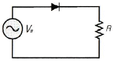
- 3.0[Joule]
- 7.5[Joule]
- 10.5[Joule]
- 15.0[Joule]
(정답률: 64%)
16. 가변 커패시터로 사용하기 위해서 사용되는 다이오드는?
- 건 다이오드
- 바랙터 다이오드
- 발광 다이오드
- 터널 다이오드
(정답률: 60%)
17. 응용 논리 회로의 설계에 사용되는 PLA(Programmed Logic Array) 내부는 어떤 논리 소자의 array로 구성되어 있는가?
- and gate와 nand gate array
- or gate와 nor gate array
- not gate와 buffer gate array
- and gate와 or gate array
(정답률: 알수없음)
18. 아날로그 변조 방식에서 진폭변조(AM)의 개념을 바르게 설명한 것은 다음 중 어느 것인가?
- 아날로그 정보신호에 따라 반송파의 진폭을 변환시키는 방식
- 반송파 신호에 따라 아날로그 정보신호의 진폭을 변화시키는 방식
- 아날로그 정보신호에 따라 반송파의 진폭과 위상을 변환시키는 방식
- 반송파 신호에 따라 아날로그 정보신호의 진폭을 변화시키는 방식
(정답률: 75%)
19. LC 궤환 발진기가 아닌 것은?
- 콜피츠 발진기
- 하틀리 발진기
- 클랩 발진기
- 위상천이 발진기
(정답률: 알수없음)
20. 다음 그림의 논리회로는 어떠한 기능을 수행하는가?
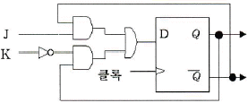
- 존슨 카운터
- D 플립플롭을 이용한 J-K 플립플롭의 구현
- 클록 신호의 2분주기
- 플립플롭을 이용한 랜덤 수 발생기
(정답률: 알수없음)
2과목: 방송통신 기기
21. 다음 그림은 NTSC TV 신호의 주파수 스펙트럼을 도식화한 것이다. (가), (나)의 주파수로 맞게 짝지어진 것은?
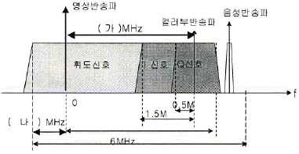
- (가): 3.58, (나): 1.50
- (가): 3.58, (나): 1.25
- (가): 4.20, (나): 1.25
- (가): 4.50, (나): 1.50
(정답률: 80%)
22. 디지털 위성방송의 수신 시스템에 구성 요소가 아닌 것은?
- 접시형 안테나
- 저잡음 주파수 변환기
- 엠퍼시스 변환기
- 위성방송 수신기
(정답률: 42%)
23. 다음 중 방송국 스튜디오 설비에 속하지 않는 것은?
- 자동송출장치
- 카메라 제어기
- 조명 기기
- 마이크로폰
(정답률: 알수없음)
24. 다음 중 위성의 규모를 작게 하고 고품질을 수신하기 위한 것과 거리가 먼 것은?
- 안테나의 방향을 방송위성의 방향과 일치시켜야 한다.
- 수신안테나를 가능하면 작게한다.
- 초단의 잡음특정을 좋게 하기 위하여 LNA를 사용한다.
- 수신안테나의 이득을 크게 한다.
(정답률: 80%)
25. 디지털 위성방송의 송신부에서 비디오 신호(SD급)를 디지털로 변환 후 압축하는 방식은?
- H.262
- JPEG-2
- MPEG-2
- MP3
(정답률: 64%)
26. 아날로그 신호를 디지털 신호로 변환할 때 표본화된 신호값을 일정한 스텝의 정수배로 표현하는 과정에서 표본값과 차이가 잡음으로 나타나는 것을 무엇이라 하는가?
- 표본화 잡음
- 양자화 잡음
- 부호화 잡음
- 주파수 변환 잡음
(정답률: 67%)
27. 스피커에서 나온 소리가 마이크로폰으로 수음되어 증폭되고, 다시 스피커로부터 송출되어 계속 반복되는 발진현상을 무엇이라 하는가?
- 자기공명
- 바이노럴 효과
- 와우 플러터
- 하울링
(정답률: 90%)
28. 디지털 영상신호 중 SDTV 스튜디오 규격으로 휘도신호의 표본화 주파수는 무엇인가?
- 6.75[MHz]
- 13.5[MHz]
- 37.125[MHz]
- 74.25[MHz]
(정답률: 알수없음)
29. 분배센터에서 가입자가 속한 셀 노드(Node)까지는 광케이블로 연결하고 셀 노드에서 가입자까지는 동축케이블을 이용하는 망구성 방식을 무엇이라 하는가?
- FTTH
- HFC
- PON
- FTTC
(정답률: 알수없음)
30. AM 라디오 방송 신호에 반송파를 삽입하는 이유는?
- 동기 검파가 가능하게 하기 위하여
- 포락선 검파가 가능하게 하기 위하여
- 전력 효율을 개선하기 위하여
- 수신시 S/N비를 개선하기 위하여
(정답률: 50%)
31. 방송국 송신소의 주요 설비가 아닌 것은?
- 수신 설비
- 송신 설비
- 프로그램 운행설비
- 제어, 감시 설비
(정답률: 24%)
32. 다음은 국내 초단파(VHF) 대역의 주파수 분배 내역이다. 옳지 않은 것은?
- FM 라디오 방송 : 88[MHz]~108[MHz]
- TV 방송 ch2~4 : 54[MHz]~72[MHz]
- TV 방송 ch5~6 : 72[MHz]~84[MHz]
- TV 방송 ch7~13 : 174[MHz]~216[MHz]
(정답률: 알수없음)
33. 다음 중 송출기 시험시 스퓨리어스 발사강도가 허용치 아내인지를 조사할 수 있는 장비는?
- 파형 모니터
- 주파수 카운터
- 오실로스코프
- 스펙트럼 아날라이져
(정답률: 100%)
34. 슈퍼헤테로다인 수신기에 관한 설명 중 틀린 것은?
- 입력 신호에 국부발진 주파수를 곱함으로써 중간주파수를 얻어내어 증폭하는 방식이다.
- 중간주파수를 높게 선택할수록 선택도가 낮아진다.
- 중간주파수를 낮게 선택할수록 영상신호의 영향을 덜 받는다.
- 영상신호 주파수는 수신 신호주파수에 중간주파수의 2배를 더한 주파수이다.
(정답률: 31%)
35. NTSC 방식 TV 방송의 1개 채널 대역폭은 얼마인가?
- 6[MHz]
- 7[MHz]
- 8[MHz]
- 12[MHz]
(정답률: 알수없음)
36. TV 동기 신호에 대한 다음 설명 중 틀린 것은?
- 수평동기 신호와 수직동기 신호가 있다.
- 수평동기 신호주파수는 15.75[kHz]이다.
- 수평동기 신호는 각 수평 주사라인의 수평귀선 소거기간 내에 삽입된다.
- 수직동기 신호는 수직귀선(VBI)에 삽입되며 1H 간격 펄스로 3H기간동안 지속된다.
(정답률: 92%)
37. 다음 중 FM 수신기에서 송신시 강조되었던 고주파 성분을 수신시에 원상 회복하는 회로는?
- 동조회로
- 고주파 증폭회로
- 디엠퍼시스 회로
- 저주파 증폭회로
(정답률: 80%)
38. TV 신호 크기는 IRE 단위로 표시한다. 수평동기신호는 몇 [IRE]이고, 크기는 몇 [Vpp] 인가?
- -40[IRE], 0.286[Vpp]
- -40[IRE], 0.333[Vpp]
- -50[IRE], 0.667[Vpp]
- -50[IRE], 0.714[Vpp]
(정답률: 알수없음)
39. 영상, 음성 등의 아날로그 신호를 디지털 신호로 변환하는 PCM의 표본화 단계에서 최소 어느 정도의 빈도로 표본화를 하여야 원신호 복구가 가능한가?
- 최고주파수의 2배
- 최고주파수의 4배
- 최고주파수의 6배
- 최고주파수의 8배
(정답률: 알수없음)
40. 다음 중 우리나라 지상파 디지털 TV의 변조방식은 무엇인가?
- COFDM
- QPSK
- 8-VSB
- QAM
(정답률: 73%)
3과목: 방송미디어 개론
41. 우리나라 FM 방송의 사용주파수 대역에서 1채널간의 주파수대역은?
- 75[kHz]
- 150[kHz]
- 200[kHz]
- 250[kHz]
(정답률: 알수없음)
42. 다음은 아날로그 TV 신호를 전송하기 위한 휘도 신호 Y를 합성하기 위해 적색(R), 녹색(G), 청색(B)을 합성하는 공식이다. ( )에 들어갈 숫자로 가장 적당한 것은?
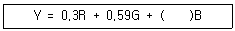
- 0.11
- 0.30
- 0.38
- 0.59
(정답률: 알수없음)
43. 영상을 압축하는 방식 중 반복되어 나타나는 블록 정보들을 그 반복 횟수로 표현하는 부호화 방식은?
- Run Length code
- Lempel-Ziv-Welch code
- Huffman code
- codeTrellis code
(정답률: 74%)
44. CATV 방송 시스템의 기본 구성에서, 지상파 텔레비전 방송이나 위성 텔레비전 방송 프로그램을 수신하고 채널 등을 변환하여 동축 케이블 또는 광케이블로 송출하거나, CATV 방송 사업자가 자체적으로 제작한 프로그램이나 프로그램 공급자로부터 공급받은 프로그램을 케이블로 송출하는 설비는?
- 분배망
- 헤드엔드
- 서비스전송로
- 가입자 단말장치
(정답률: 알수없음)
45. 유럽의 디지털 지상파 방송(DVB-T) 방식에 사용되는 오디오 압축규격은?
- MPEG-1
- MPEG-2
- MPEG-3
- MPEG-4
(정답률: 80%)
46. 음성신호압축방식 중 펄스부호변조(PCM) 시스템의 기본 구성을 순서대로 나열한 것 중 적당한 것은?
- 부호화 - 양자화 - 표본화
- 부호화 - 표본화 - 양자화
- 표본화 - 양자화 - 부호화
- 표본화 - 부호화 - 양자화
(정답률: 알수없음)
47. 화면에 다음 보기의 영상이 있을 때 화면내의 상관도가 가장 높은 경우는?
- 깨끗한 화이트 보드
- 알록달록한 체크무늬
- 단풍이 든 나무 숲
- 잔잔한 물결이 이는 강물
(정답률: 100%)
48. 지향성 좋은 고감도 마이크를 긴 장대 위에 매달아 음원을 향하여 이동하면서 흡음하는 장치는?
- 전지향성(omni-directional) 마이크
- 붐(boom) 마이크
- 리본(ribbon) 마이크
- 콘택트(contact) 마이크
(정답률: 알수없음)
49. RF 신호를 불균형적으로 분배하고자 할 때 사용되는 수동기기로 통상 삽입손실을 최소화 하고자 하는 2분기 형태로 사용되는 것으로 적절한 것은?
- splitter
- combiner
- directional coupler
- matching pad
(정답률: 알수없음)
50. 종합유선방송국으로서 각 지역을 분할해 케이블 방송을 전송하거나 지역 방송을 제작해 전송하는 사업자는?
- SO
- NO
- PP
- CP
(정답률: 100%)
51. 무궁화 위성은 적도상공 몇 [km] 정지궤도에 위치하는가?
- 약 3,400[km]
- 약 3,600[km]
- 약 34,000[km]
- 약 36,000[km]
(정답률: 92%)
52. 다음 중 뉴미디어의 일반적인 특징과 거리가 먼 것은?
- 디지털화
- 단방향성
- 비동시성
- 속보성
(정답률: 알수없음)
53. 네트워크 통신에서 생기는 여러 가지 충돌 문제를 완화하기 위하여, 국제표준기구(ISO)에서 표준화된 네트워크 구조인 OSI 모델에서 최하위 계층은?
- 전송층
- 물리층
- 표현층
- 응용층
(정답률: 80%)
54. 우리나라 디지털 CATV의 전송방식은?
- VSB
- QAM
- FSK
- BPSK
(정답률: 알수없음)
55. 영문 코드를 표현하는 ASCII 방식으로 표현 가능한 코드의 수는?
- 32
- 64
- 128
- 256
(정답률: 92%)
56. 가청 주파수 대역에 모든 주파수 성분이 일정한 크기로 분포하는 신호로 음향 측정에 사용되는 것은?
- single tone
- white noise
- harmonic
- consonance
(정답률: 알수없음)
57. 개발자가 구조화된 문서를 정의하고 자유롭게 태그를 정의할 수 있다는 SGML의 장점과 인터넷상에서 손쉽게 하이퍼미디어 문서를 제공할 수 있는 HTML의 장점을 그대로 보유하고 있는 데이터 저장과 전송을 위한 마크업 언어(Markup Language)는?
- VRML
- XML
- TVML
- TeX
(정답률: 82%)
58. 우리나라에서 사용되는 지상파 DMB 방송의 전송방식은?
- OFDM 전송방식
- FDM 전송방식
- TDM 전송방식
- 8-VSB 전송방식
(정답률: 알수없음)
59. 오디오의 음질을 가공하기 위한 이펙터(effecter)의 분류에서 오디오의 주파수 영역의 조정을 통해 음색을 보정하는 장비는?
- 리미터(limiter)
- 컴프레서(compressor)
- 노이즈 게이트(noise gate)
- 이퀄라이저(equalizer)
(정답률: 86%)
60. 우리나라 지상파 디지털방송(DTV)에 사용되는 방송방식은?
- NTSC 방식
- ATSC 방식
- DVB 방식
- PAL 방식
(정답률: 알수없음)
4과목: 전자계산기 일반 및 방송설비기준
61. 분배기 및 분기기의 기준에서 유휴 분배단자와 유휴 분기단자는 사용회선에 영향을 미치지 아니하도록 몇 옴[Ω]으로 종단하여야 하는가?
- 55[Ω]
- 65[Ω]
- 75[Ω]
- 85[Ω]
(정답률: 알수없음)
62. 데이터방송의 정의에서 데이터를 정확히 표현한 항목은?
- 문자ㆍ숫자ㆍ도형ㆍ도표ㆍ이미지 그밖의 정보체계를 말한다.
- 문자ㆍ음향ㆍ도형ㆍ도표ㆍ이미지 그밖의 정보체계를 말한다.
- 문자ㆍ숫자ㆍ도형ㆍ영상ㆍ이미지 그밖의 정보체계를 말한다.
- 문자ㆍ숫자ㆍ도해ㆍ도표ㆍ문헌 그밖의 정보체계를 말한다.
(정답률: 60%)
63. 다음은 운영체제의 목적 중에서 원하는 시간 내에 시스템을 얼마나 빨리 사용할 수 있는가의 정도를 나타내는 것은 무엇에 해당되는가?
- 처리능력(Throughput)의 향상
- 응답시간(Turn-Around Time)의 단축
- 사용가능도(Availability)의 향상
- 신뢰도(Reliability)의 향상
(정답률: 알수없음)
64. Daisy-chain 인터럽트 처리 방식의 설명으로 잘못된 것은?
- 인터럽트를 요청할 주변장치들끼리 먼저 우선순위를 조정함
- 한 순간에 하나의 인터럽트만 요구함
- CPU가 인터럽트 관리를 위한 별도의 작업이 필요 없어 인터럽트 응답시간이 빨라짐
- CPU는 어느 주변장치가 인터럽트를 요청했는지 찾아보아야 함
(정답률: 46%)
65. 음반ㆍ비디오물 및 게임물에 관한 법류에 해당되는 방송은?
- 중계유선방송
- 음악전송방송
- 음악유선방송
- 중계전송방송
(정답률: 77%)
66. 88-51을 10의 보수를 이용하여 구하라?
- 13
- 17
- 37
- 49
(정답률: 100%)
67. 운영체제가 유저에게 제공하는 기능이 아닌 것은?
- 시스템의 자원 할당
- 파일 시스템의 처리
- 일반 프로그램의 실행
- 시스템의 무제한 접근
(정답률: 77%)
68. 공사의 사용 전 검사에서 대통령령으로 정하는 공사가 아닌 항은?
- 구내통신 선로공사
- 이동통신 구내선로공사
- 종합유선방송 전송선로공사
- 무선가입자 망설비공사
(정답률: 60%)
69. 10진수 23을 2진수로 변환하라?
- 11101
- 10111
- 10101
- 11011
(정답률: 90%)
70. 다음 운영체제의 기본적인 기능 중 틀린 것은 어느 것인가?
- 기억장치 관리; 주기억장치인 RAM을 관리한다.
- 프로세스 관리; CPU 시간을 할당하기 위한 방법을 결정한다.
- 입출력장치 관리; 자원공유 및 접근제어를 한다.
- 파일 관리자; 데이터 파일, 컴파일러, 유틸리티 등을 관리한다.
(정답률: 80%)
71. 다음 연산의 결과로 옳은 것은?
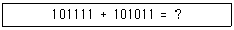
- 0101101
- 1011010
- 0110101
- 1011011
(정답률: 알수없음)
72. 전송망 사업의 정의에서 ( )에 해당되는 항은?
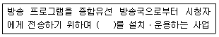
- 유ㆍ무선 광선ㆍ선로설비
- 유ㆍ무선 전송ㆍ선로설비
- 유ㆍ무선 방송ㆍ선로설비
- 유ㆍ무선 전송ㆍ방송설비
(정답률: 알수없음)
73. 정보통신 공사업법의 방송설비공사에서 방송국 설비공사가 아닌 항은?
- 영상ㆍ음향 설비
- 송출 설비
- 송ㆍ수신 설비
- 방송관리시스템 설비
(정답률: 70%)
74. 방송의 정의에 해당되지 않는 항은?
- 텔레비전 방송
- 라디오 방송
- 데이터 방송
- 이동무선 방송
(정답률: 알수없음)
75. ALU(연산논리장치)에 대한 설명 중 아닌 것은?
- 산술연산과 논리연산으로 구성됨
- 이진수를 기반으로 하고 있으며 양수는 2의 보수 형식으로 표현함
- 산술연산은 주로 사칙연산을 의미함
- 논리연산은 논리 수식의 참과 거짓을 판명하며, AND, OR, NOT, XOR 등이 포함됨
(정답률: 91%)
76. 다음 숫자의 코드에 대한 설명 중 틀린 것은?
- BCD(Binary Coded Decimal) 코드는 10진화 2진 코드로서 일반적으로 사용되고 있는 2진수를 10진수로 표현한 것이다.
- BCD 코드는 10진수를 2진수로 표시하여 이해하기 쉬운 코드지만 보수를 구하기는 불편하다. 보수를 구하기 쉽도록 만든 코드가 바로 엑세스-3 코드이다.
- 엑세스-3 코드(excess-3 code)는 BCD 코드에 3(0011)을 더한 코드이며, 자릿수가 정해진 것이 아니므로 언웨이티드 코드(unweighted code)이다.
- BCD 코드는 0~9까지만이 표현되기 때문에 1010, 1011, 1100, 1101, 1110, 1111의 6가지는 사용되지 않는다.
(정답률: 알수없음)
77. 다음 중 입력장치만으로 구성된 항은?
- 자기디스크, 라인 프린터, OMR
- OMR, OCR, 콘솔 키보드
- 콘솔 키보드, 카드 리더, XY 플로터
- 콘솔 키보드, 카드 리더, XY 플로터
(정답률: 알수없음)
78. 다음 자료구조 중 스택이 사용되는 경우가 아닌 것은?
- 인터럽트 처리
- 산술연산
- 스풀(spool)의 처리
- 서브루틴의 복귀번지 저장
(정답률: 알수없음)
79. 다음은 방송 공동 수신설비에 사용하는 설비이다. 관련 없는 항은?
- 주파수 변환기
- 분배기 및 분기기
- 신호처리기
- 레벨변환기
(정답률: 알수없음)
80. 감리원의 업무범위에서 검토ㆍ확인 사항이 아닌 것은?
- 공사계호기 및 공정표의 검토ㆍ확인
- 설계변경에 관한 사항의 검토ㆍ확인
- 공사업자가 작성한 시공상세도면의 검토ㆍ확인
- 사용자재의 규격 및 적합성에 관한 검토ㆍ확인
(정답률: 75%)